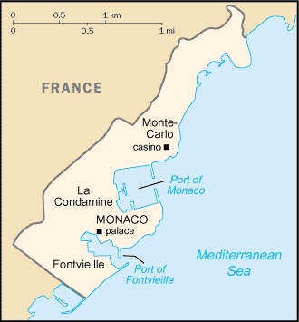
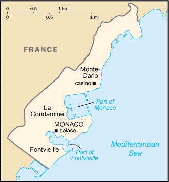

-
Introduction :: Monaco
-
Background:The Genoese built a fortress on the site of present day Monaco in 1215. The current ruling GRIMALDI family first seized control in 1297 but was not able to permanently secure its holding until 1419. Economic development was spurred in the late 19th century with a railroad linkup to France and the opening of a casino. Since then, the principality's mild climate, splendid scenery, and gambling facilities have made Monaco world famous as a tourist and recreation center.
-
Geography :: Monaco
-
Location:Western Europe, bordering the Mediterranean Sea on the southern coast of France, near the border with ItalyGeographic coordinates:43 44 N, 7 24 EMap references:EuropeArea:total: 2 sq kmland: 2 sq kmwater: 0 sq kmcountry comparison to the world: 255Area - comparative:about three times the size of the National Mall in Washington, DCLand boundaries:total: 6 kmborder countries (1): France 6 kmCoastline:4.1 kmMaritime claims:territorial sea: 12 nmexclusive economic zone: 12 nmClimate:Mediterranean with mild, wet winters and hot, dry summersTerrain:hilly, rugged, rockyElevation:0 m lowest point: Mediterranean Sea162 highest point: Chemin des Révoires on Mont AgelNatural resources:noneLand use:agricultural land: 1% (2011 est.)arable land: 0% (2011 est.) / permanent crops: 1% (2011 est.) / permanent pasture: 0% (2011 est.)forest: 0% (2011 est.)other: 99% (2011 est.)Irrigated land:0 sq km (2012)Population distribution:the most densely populated country in the world; its entire population living on 2 square kmNatural hazards:noneEnvironment - current issues:no serious issues; actively monitors pollution levels in air and waterEnvironment - international agreements:party to: Air Pollution, Air Pollution-Sulfur 94, Air Pollution-Volatile Organic Compounds, Biodiversity, Climate Change, Climate Change-Kyoto Protocol, Desertification, Endangered Species, Hazardous Wastes, Law of the Sea, Marine Dumping, Ozone Layer Protection, Ship Pollution, Wetlands, Whalingsigned, but not ratified: none of the selected agreementsGeography - note:second-smallest independent state in the world (after the Holy See); smallest country with a coastline; almost entirely urban
-
People and Society :: Monaco
-
Population:30,727 (July 2017 est.) (July 2018 est.)
note: immigrants make up almost 55% of the total population, according to UN data (2017)
country comparison to the world: 217Nationality:noun: Monegasque(s) or Monacan(s)adjective: Monegasque or MonacanEthnic groups:Monegasque 32.1%, French 19.9%, Italian 15.3%, British 5%, Belgian 2.3%, Swiss 2%, German 1.9%, Russian 1.8%, American 1.1%, Dutch 1.1%, Moroccan 1%, other 16.6% (2016 est.)note: data represent population by country of birth
Languages:French (official), English, Italian, MonegasqueReligions:Roman Catholic 90% (official), other 10%Age structure:0-14 years: 10.27% (male 1,622 /female 1,533)15-24 years: 9.39% (male 1,498 /female 1,387)25-54 years: 32.15% (male 4,964 /female 4,916)55-64 years: 15.04% (male 2,305 /female 2,315)65 years and over: 33.15% (male 4,530 /female 5,657) (2018 est.)population pyramid: The World Factbook Field Image ModalEurope :: Monaco Print
The World Factbook Field Image ModalEurope :: Monaco Print Image DescriptionThis is the population pyramid for Monaco. A population pyramid illustrates the age and sex structure of a country's population and may provide insights about political and social stability, as well as economic development. The population is distributed along the horizontal axis, with males shown on the left and females on the right. The male and female populations are broken down into 5-year age groups represented as horizontal bars along the vertical axis, with the youngest age groups at the bottom and the oldest at the top. The shape of the population pyramid gradually evolves over time based on fertility, mortality, and international migration trends.
Image DescriptionThis is the population pyramid for Monaco. A population pyramid illustrates the age and sex structure of a country's population and may provide insights about political and social stability, as well as economic development. The population is distributed along the horizontal axis, with males shown on the left and females on the right. The male and female populations are broken down into 5-year age groups represented as horizontal bars along the vertical axis, with the youngest age groups at the bottom and the oldest at the top. The shape of the population pyramid gradually evolves over time based on fertility, mortality, and international migration trends.
For additional information, please see the entry for Population pyramid on the Definitions and Notes page under the References tab.Median age:total: 53.8 yearsmale: 52.4 yearsfemale: 55.3 years (2018 est.)country comparison to the world: 1Population growth rate:0.3% (2018 est.)country comparison to the world: 170Birth rate:6.5 births/1,000 population (2018 est.)country comparison to the world: 226Death rate:10.1 deaths/1,000 population (2018 est.)country comparison to the world: 36Net migration rate:5.7 migrant(s)/1,000 population (2017 est.)country comparison to the world: 20Population distribution:the most densely populated country in the world; its entire population living on 2 square kmUrbanization:urban population: 100% of total population (2018)rate of urbanization: 0.51% annual rate of change (2015-20 est.)Major urban areas - population:39,000 MONACO (capital) (2018)Sex ratio:at birth: 1.05 male(s)/female (2017 est.)0-14 years: 1.06 male(s)/female (2017 est.)15-24 years: 1.06 male(s)/female (2017 est.)25-54 years: 1 male(s)/female (2017 est.)55-64 years: 0.99 male(s)/female (2017 est.)65 years and over: 0.81 male(s)/female (2017 est.)total population: 0.95 male(s)/female (2017 est.)Infant mortality rate:total: 1.8 deaths/1,000 live births (2018 est.)male: 2.1 deaths/1,000 live births (2018 est.)female: 1.6 deaths/1,000 live births (2018 est.)country comparison to the world: 223Life expectancy at birth:total population: 89.4 years (2018 est.)male: 85.5 years (2018 est.)female: 93.4 years (2018 est.)country comparison to the world: 1Total fertility rate:1.54 children born/woman (2018 est.)country comparison to the world: 191Health expenditures:4.3% of GDP (2014)country comparison to the world: 160Physicians density:6.65 physicians/1,000 population (2014)Hospital bed density:13.8 beds/1,000 population (2012)Drinking water source:improved: urban: 100% of populationtotal: 100% of populationunimproved: urban: 0% of populationtotal: 0% of population (2015 est.)Sanitation facility access:improved: urban: 100% of population (2015 est.)total: 100% of population (2015 est.)unimproved: urban: 0% of population (2015 est.)total: 0% of population (2015 est.)HIV/AIDS - adult prevalence rate:NAHIV/AIDS - people living with HIV/AIDS:NAHIV/AIDS - deaths:NAEducation expenditures:1.4% of GDP (2016)country comparison to the world: 176Unemployment, youth ages 15-24:total: 26.6% (2016 est.)male: 25.7% (2016 est.)female: 27.9% (2016 est.)country comparison to the world: 42 -
Government :: Monaco
-
Country name:conventional long form: Principality of Monacoconventional short form: Monacolocal long form: Principaute de Monacolocal short form: Monacoetymology: founded as a Greek colony in the 6th century B.C., the name derives from two Greek words "monos" (single, alone) and "oikos" (house) to convey the sense of a people "living apart" or in a "single habitation"Government type:constitutional monarchyCapital:name: Monacogeographic coordinates: 43 44 N, 7 25 Etime difference: UTC+1 (6 hours ahead of Washington, DC, during Standard Time)daylight saving time: +1hr, begins last Sunday in March; ends last Sunday in OctoberAdministrative divisions:none; there are no first-order administrative divisions as defined by the US Government, but there are 4 quarters (quartiers, singular - quartier); Fontvieille, La Condamine, Monaco-Ville, Monte-Carlo; note - Moneghetti, a part of La Condamine, is sometimes called the 5th quarter of MonacoIndependence:1419 (beginning of permanent rule by the House of GRIMALDI)National holiday:National Day (Saint Rainier's Day), 19 November (1857)Constitution:history: previous 1911 (suspended 1959); latest adopted 17 December 1962 (2016)amendments: proposed by joint agreement of the chief of state (the prince) and the National Council; passage requires two-thirds majority vote of National Council members; amended 2002 (2016)Legal system:civil law system influenced by French legal traditionInternational law organization participation:has not submitted an ICJ jurisdiction declaration; non-party state to the ICCtCitizenship:citizenship by birth: nocitizenship by descent only: the father must be a citizen of Monaco; in the case of a child born out of wedlock, the mother must be a citizen and father unknowndual citizenship recognized: noresidency requirement for naturalization: 10 yearsSuffrage:18 years of age; universalJudicial branch:highest courts: Supreme Court (consists of 5 permanent members and 2 substitutes)judge selection and term of office: Supreme Court members appointed by the monarch upon the proposals of the National Council, State Council, Crown Council, Court of Appeal, and Trial Courtsubordinate courts: Court of Appeal; Civil Court of First InstanceExecutive branch:chief of state: Prince ALBERT II (since 6 April 2005)head of government: Minister of State Serge TELLE (since 1 February 2016)cabinet: Council of Government under the authority of the monarchelections/appointments: the monarchy is hereditary; minister of state appointed by the monarch from a list of three French national candidates presented by the French GovernmentLegislative branch:description: unicameral National Council or Conseil National (24 seats; 16 members directly elected in multi-seat constituencies by simple majority vote and 8 directly elected by proportional representation vote; members serve 5-year terms)elections: last held on 11 February 2018 (next to be held in February 2023)election results: percent of vote by party - Priorite Monaco 57.7%, Horizon Monaco 26.1%, Union Monegasque 16.2%; seats by party - Priorite Monaco 21, Horizon Monaco 2, Union Monegasque 1; composition - men 16, women 8, percent of women 33.3%Political parties and leaders:Horizon Monaco [Laurent NOUVION]
Priorite Monaco [Stephane VALERI]
Renaissance [SBM (public corporation)]
Union Monegasque [Jean-Francois ROBILLON]International organization participation:CD, CE, FAO, IAEA, ICAO, ICC (national committees), ICRM, IFRCS, IHO, IMO, IMSO, Interpol, IOC, IPU, ITSO, ITU, OAS (observer), OIF, OPCW, OSCE, Schengen Convention (de facto member), UN, UNCTAD, UNESCO, UNIDO, Union Latina, UNWTO, UPU, WHO, WIPO, WMODiplomatic representation in the US:chief of mission: Ambassador Maguy MACCARIO-DOYLE (since 3 December 2013)chancery: 3400 International Drive NW, Suite 2K-100, Washington, DC 20008telephone: (202) 234-1530FAX: (202) 244-7656consulate(s) general: New YorkDiplomatic representation from the US:the US does not have an embassy in Monaco; the US Ambassador to France is accredited to Monaco; the US Consul General in Marseille (France), under the authority of the US Ambassador to France, handles diplomatic and consular matters concerning MonacoFlag description:two equal horizontal bands of red (top) and white; the colors are those of the ruling House of Grimaldi and have been in use since 1339, making the flag one of the world's oldest national bannersnote: similar to the flag of Indonesia which is longer and the flag of Poland which is white (top) and red
National symbol(s):red and white lozenges (diamond shapes); national colors: red, whiteNational anthem:name: "A Marcia de Muneghu" (The March of Monaco)lyrics/music: Louis NOTARI/Charles ALBRECHTnote: music adopted 1867, lyrics adopted 1931; although French is commonly spoken, only the Monegasque lyrics are official; the French version is known as "Hymne Monegasque" (Monegasque Anthem); the words are generally only sung on official occasions
-
Economy :: Monaco
-
Economy - overview:
Monaco, bordering France on the Mediterranean coast, is a popular resort, attracting tourists to its casino and pleasant climate. The principality also is a banking center and has successfully sought to diversify into services and small, high-value-added, nonpolluting industries. The state retains monopolies in a number of sectors, including tobacco, the telephone network, and the postal service. Living standards are high, roughly comparable to those in prosperous French metropolitan areas.
The state has no income tax and low business taxes and thrives as a tax haven both for individuals who have established residence and for foreign companies that have set up businesses and offices. Monaco, however, is not a tax-free shelter; it charges nearly 20% value-added tax, collects stamp duties, and companies face a 33% tax on profits unless they can show that three-quarters of profits are generated within the principality. Monaco was formally removed from the OECD's "grey list" of uncooperative tax jurisdictions in late 2009, but continues to face international pressure to abandon its banking secrecy laws and help combat tax evasion. In October 2014, Monaco officially became the 84th jurisdiction participating in the OECD’s Multilateral Convention on Mutual Administrative Assistance in Tax Matters, an effort to combat offshore tax avoidance and evasion.
Monaco's reliance on tourism and banking for its economic growth has left it vulnerable to downturns in France and other European economies which are the principality's main trade partners. In 2009, Monaco's GDP fell by 11.5% as the euro-zone crisis precipitated a sharp drop in tourism and retail activity and home sales. A modest recovery ensued in 2010 and intensified in 2013, with GDP growth of more than 9%, but Monaco's economic prospects remain uncertain.
GDP (purchasing power parity):$7.672 billion (2015 est.)$7.279 billion (2014 est.)$6.79 billion (2013 est.)note: data are in 2015 US dollars
country comparison to the world: 165GDP (official exchange rate):$6.006 billion (2015 est.) (2015 est.)GDP - real growth rate:5.4% (2015 est.)7.2% (2014 est.)9.6% (2013 est.)country comparison to the world: 40GDP - per capita (PPP):$115,700 (2015 est.)$109,200 (2014 est.)$101,900 (2013 est.)country comparison to the world: 3GDP - composition, by sector of origin:agriculture: 0% (2013)industry: 14% (2013)services: 86% (2013)Agriculture - products:noneIndustries:banking, insurance, tourism, construction, small-scale industrial and consumer productsIndustrial production growth rate:6.8% (2015)country comparison to the world: 33Labor force:52,000 (2014 est.)note: includes all foreign workers
country comparison to the world: 190Labor force - by occupation:agriculture: 0%industry: 16.1%services: 83.9% (2012 est.)Unemployment rate:2% (2012)country comparison to the world: 19Population below poverty line:NABudget:revenues: 896.3 million (2011 est.)expenditures: 953.6 million (2011 est.)Taxes and other revenues:14.9% (of GDP) (2011 est.)country comparison to the world: 196Budget surplus (+) or deficit (-):-1% (of GDP) (2011 est.)country comparison to the world: 80Fiscal year:calendar yearInflation rate (consumer prices):1.5% (2010)country comparison to the world: 84Exports:$964.6 million (2017 est.)$1.115 billion (2011)note: full customs integration with France, which collects and rebates Monegasque trade duties; also participates in EU market system through customs union with France
country comparison to the world: 162Imports:$1.371 billion (2017 est.)$1.162 billion (2011 est.)note: full customs integration with France, which collects and rebates Monegasque trade duties; also participates in EU market system through customs union with France
country comparison to the world: 175Debt - external:NA
Exchange rates:euros (EUR) per US dollar -0.885 (2017 est.)0.903 (2016 est.)0.9214 (2015 est.)0.885 (2014 est.)0.7634 (2013 est.) -
Energy :: Monaco
-
Electricity access:electrification - total population: 100% (2016)
-
Communications :: Monaco
-
Telephones - fixed lines:total subscriptions: 47,013 (2017 est.)subscriptions per 100 inhabitants: 153 (2017 est.)country comparison to the world: 159Telephones - mobile cellular:total subscriptions: 32,978 (2017 est.)subscriptions per 100 inhabitants: 108 (2017 est.)country comparison to the world: 206Telephone system:general assessment: modern automatic telephone system; the country's sole fixed-line operator offers a full range of services to residential and business customers (2016)domestic: combined fixed-line and mobile-cellular teledensity exceeds 250 per 100 persons (2016)international: country code - 377; no satellite earth stations; connected by cable into the French communications system (2016)Broadcast media:TV Monte-Carlo operates a TV network; cable TV available; Radio Monte-Carlo has extensive radio networks in France and Italy with French-language broadcasts to France beginning in the 1960s and Italian-language broadcasts to Italy beginning in the 1970s; other radio stations include Riviera Radio and Radio Monaco (2012)Internet country code:.mcInternet users:total: 29,116 (July 2016 est.)percent of population: 95.2% (July 2016 est.)country comparison to the world: 203Broadband - fixed subscriptions:total: 19,258 (2017 est.)subscriptions per 100 inhabitants: 63 (2017 est.)country comparison to the world: 152
-
Transportation :: Monaco
-
Civil aircraft registration country code prefix:3A (2016)Heliports:1 (2012)Roadways:total: 77 km (2010)paved: 77 km (2010)country comparison to the world: 218Ports and terminals:major seaport(s): Monaco
-
Military and Security :: Monaco
-
Military branches:no regular military forces; Directorate of Public Security (2012)Military - note:defense is the responsibility of France
-
Transnational Issues :: Monaco
-
Disputes - international:none
Europe ::
Monaco